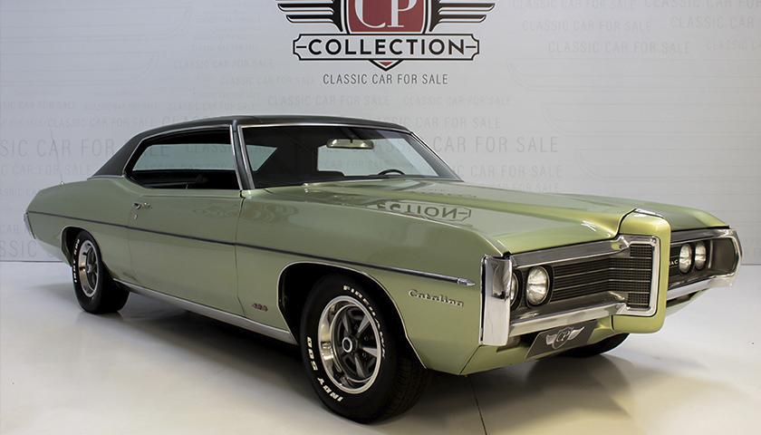

Pontiac Catalina 1969
O Pontiac Catalina é um automóvel da Pontiac de 1950 a 1981. Inicialmente, aparecendo pela primeira vez nas linhas Chieftain 8 e DeLuxe 8 de 1950. Em
1959, a Catalina tornou-se um modelo separado. Os Pontiacs de 1969 receberam uma grande remodelação com um pouco mais de metal de esquadria. No entanto, o chassi
básico de 1965, a estrutura da carroceria e o teto do sedan de quatro portas foram mantidos.
- Motor original 428;
- Cambio automático original;
- Pneus Indy Firewalk;
- Pintura verde, interior verde monocromático e teto de vinil verde;
Voltar a Lista
Comprar